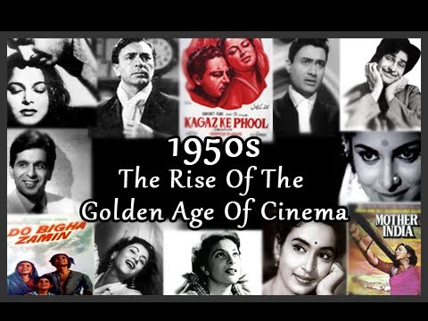

Dance
A myriad expressions of India’s heritage and traditions
-
Folk Dance

Indian folk and tribal dances are an expression of joy. Folk dances are performed on every possible occasion, to celebrate the arrival of seasons, birth of a child, a wedding and festivals. The dances are simple in terms of steps or movements but burst with verve and vitality. Men and women perform some dances exclusively, while in some performances men and women dance together. On most occasions, the dancers sing themselves, while being accompanied by artists on the instruments. Each form of dance has a specific costume. Most costumes are flamboyant with extensive jewellery. The north-east part of the country is the home for over 60 tribes, and each tribe has its own range of tribal dances. The dances of the Nagas and the Bihus of Assam are performed to celebrate spring and harvesting. The main folk dance of Gujarat, the Dandiya, is performed using sticks. Each performer holds two sticks, which they strike alternately to the right and left while the group dances. They also move diagonally, clockwise, anti-clockwise, as they strike the sticks. The Bhangra of Punjab is performed by men, to the rhythm of the drum. The dance includes a wide range of athletic leaps and jumps. Dancers stand on each other's shoulder while dancing to the music. There are hundreds of Indian folk and tribal dances. Each region of India has its own folk dance. Both men and women perform the bamboo dance of Mizoram. While the men hold the bamboo, the women folk dance between the bamboo sticks. In this performance, the sound of the bamboo hitting each other is the rhythm. In the south, the dummy horse dance or the Poikalkuthirai is very famous. Dancers fit dummy legs to their legs and dance to music. Both men and women perform this form of art. In Tamil Nadu, dancers place a karagam or a decorated jug on their heads and dance while balancing the karagam. While there are numerous folk and tribal dances, they are constantly adapted and innovated. The skill and the imagination of the dances influence the performance.
-
Chhau
The etymologic root of the word Chhau is traced to the Sanskrit Chhaya or shade, referring to the mask used by the dancers. Others aver, it is derived from the word 'Chauuni' where the pharikhanda (shield and sword) soldiers stayed. The technique of the dance, in fact, draws on steps and gait which stem from the 'Pharikhanda System'. It is basically a martial dance where the mask holds the dominant Rasa while the body creates, projects, and develops the moods. Chhau has three schools: Seraikella in Bihar, Mayurbhanj in Orissa, and Purulia in West Bengal. While all the three Chhau forms are danced by men, Mayurbhanj uses no masks but the others do. The themes are based on mythology, everyday life, aspects of nature or just a mood or emotion. PuruliaChhau, however, has a single focus - good triumphs over evil. The music is based on Hindustani Ragas and the accompaniment is with a Nagara, a huge kettledrum, Dhol, a cylindrical drum, and Shehnai or reed pipes. The strenuous nature of the dance restricts performances to brief periods but, in PuruliaChhau, a single item could last 40 minutes and a performance, night long
-
Kathak
Kathaks were originally story tellers who used to dance to illustrate 'Kathas' or stories. They were attached to the temples of North India. With the advent of Muslim rule, Kathak went from the temple to the courts. Consequently, Kathak flowered as a form in the Hindu courts of Rajasthan and the Muslims courts of Delhi, Agra and Lucknow. Court patronage led to the evolution of Kathak into a highly technical and stylised art with emphasis on the solo performers and their virtuosity. Gradually, the two schools became distinctively different: the Jaipur Gharana (ideology in this context) focussed on layakari, or rhythmic wizardly; while the LucknowGharana expounded bhava or moods and emotions. However, both schools have Radha& Krishna as their central theme.Rhythm, timing and so footwork are the main planks of Kathak. The musical accompaniment to the 200 ghungrus or bells on the dancer's feet, are the sarangi and the tabla. Kathak is a true fusion of the Hindu and Muslim genius in art and it the only classical dance of North India.
-
Manipuri
There is no authoritative record of the history of Manipur's dance and music prior to the 18th century AD. However, the lasting developments in technique and methods took place during the time of Jai Singh (1764-89), who was a great devotee of Lord Krishna and a follower of Vaishnavism.Among the legendary and mythological tales, the Rasa Lila, dance performed by Shiva and Parvati and Lai Haraoba of Khamba and Thoibi, the celebrated lovers, deserves special mention.In the Ras Lila, the movements are extremely graceful coupled with soft and light steps in which the heels never touch down.
-
Odissi
A dance form born in the state of Orissa, Odissi manifested in temple sculptures from the 2nd century BC, practiced and enriched by the Devadasis. With the construction of the Jagannath Temple in Puri in the 12th century, the practice of dedicating devadasis in the service of the temple was initiated and continues to this day. At once sensuous and spiritual, the dance form has the ability to portray erotic sentiments in a deeply reverential manner. Odissi is a highly stylised dance with tribhanga or the three-bend attitude of Hindu sculpture. The bhava or feeling is chaste and orthodox, with flashes of heightened dramatisation. The accompanying music is pure and classical, with graces of both the Hindustani and the Carnatic styles. The instruments traditionally used are the mandala (drums), gini (small cymbals) and the flute.
-
Bharatnatyam
Bharat Natyam, one of the oldest Indian classical dance forms, is in essence of dedicatory dance performed by Devadasis(girls dedicated to a deity or to a temple)in temples, primarily in Tamil Nadu and to a smaller extent in Andhra Pradesh and Karnataka. The dance form evolved around 500 B.C to 500 AD. The key posture of this dance form requires the upper part of the body to be erect, the legs bent halfway down with the knees spread out, and the feet positioned like a half open fan. Practically every part of the body has its distinct movement.The songs used are composed from the poetic literature of Tamil, Telegu, and Sanskrit and, to some extent, Kannada. The accompanying music is in pure Carn
-
Kuchipudi
The art form takes its name from the village of its birth, in the Krishna district of Andhra Pradesh. Kuchipudi was the result of the Bhakti Movement in the 6th century, when Siddendra Yogi, the progenitor of the form, presented a dance drama with boys from the village of Kuchipudi. Consciously they raised the form above the reach of Devdasi. The boys were committed to an annual presentation of the form and they passed on the techniques to the next generation. So a tradition and a form were born.The performer has to express through the language of gestures, speech and song. The Kuchipudi artiste, apart from being a dancer and an actor has to have a high proficiency in Sanskrit and Telegu languages, music and the texts of performance.Kuchipudi plays are performed in the open air on improvised stages at night. The sutradhar, or the master of ceremonies, plays an integral role introducing characters, providing humour and tying together the performance. The fast paced nature of the dance has made it a popular dramatic form.
-
Art
The art of India is inextricably intertwined with the country’s cultural history, religions and philosophies, with the production and patronage of art being linked to social and cultural contexts. The earliest Indian religion to inspire major artistic monuments was Buddhism. Soon after the Buddhists initiated the rock-cut caves, Hindus and Jains started to imitate them at Badami, Aihole, Ellora, Salsette, Elephanta, Aurangabad and Mamallapuram. The Chola period, remarkable for its sculptures and bronzes, is represented by some of the finest figures of Siva in various forms, Vishnu and his consort Lakshmi, Siva saints, etc., created by using the lost wax technique The 2nd century BC Ajanta Caves marked the beginnings of cliff paintings in India. There are known more than 20 locations in India with paintings and traces of former paintings of ancient and early medieval times (up to 8th - 10th century AD such asBagh Caves (Madhya Pradesh), Ellora Caves (Maharashtra) andSittanavasal (Tamil Nadu). The huge range of folk and tribal art in India is manifested through varied media such as pottery, painting, metalwork,dhokra art, paper-art, weaving and designing of objects likejewellery and toys. The subjects of this art range from puranic gods, local deities, festivals, fairs, myths, nature and legends. Mughal art and architecture a characteristic Indo-Islamic-Persian style that flourished on the Indian subcontinent during the Mughal Empire (1526-1857). This new style combined elements of Islamic art and architecture, which had been introduced to India during the Delhi Sultanate (1192-1398) and had produced great monuments such as the QutbMinar, with features of Persian art and architecture. A special aspect of Mughal painting is a particular style of South Asian painting, generally confined to miniatures either as book illustrations or as single works to be kept in albums, which emerged from Persian miniature painting, with Indian Hindu, Jain, and Buddhist influences, and developed largely in the court of the Mughal Empire, and later spread to other Indian courts, both Muslim and Hindu, and later Sikh. British colonial rule had a great impact on Indian art as old patrons of art became less wealthy and influential, and Western art more ubiquitous. Abanindranath Tagore (1871–1951), referred to as the father of Modern Indian art introduced reworked Asian styles, in alignment with a developing Indian nationalism and pan-Asianism to create a new school of art, which is today known as the Bengal school of art. Other artists of the Tagore family, such as Rabindranath Tagore (1861–1941) and Gaganendranath Tagore (1867–1938) as well as new artists of the early 20th c such as Amrita Sher-Gil (1913–1941) were responsible for introducing Avant Gardewestern styles into Indian Art. Many other artists like Jamini Roy and later S.H. Raza took inspiration from folk traditions. In 1947 India became independent of British rule. A group of six artists - K. H. Ara, S. K. Bakre, H. A. Gade, M.F. Husain, S.H.Raza and Francis Newton Souza founded the Progressive Artist's Group, to establish new ways of expressing India in the post-colonial era. Though the group was dissolved in 1956, it was profoundly influential in changing the idiom of Indian art. Almost all India's major artists in the 1950s were associated with the group. Some of those who are well-known today are BalChabda, ManishiDey, V. S. Gaitonde, KrishenKhanna, Ram Kumar, Tyeb Mehta, Devender Singh, Akbar Padamsee, John Wilkins, Himmat Shah and ManjitBawa. Present-day Indian art is varied as it had been never before. Among the best-known artists of the newer generation include Sanjay Bhattacharya, Bose Krishnamachari, Narayanan Ramachandran, GeetaVadhera, Devajyoti Ray, Satish Gupta, and Bikash Bhattacharya. Contemporary Indian art takes influence from all over the world. With many Indian artists immigrating to the west, art for some artists has been a form of expression merging their past with their current in western culture.
-
Cinema
India is the world's largest producer of films, with as many as 1,000 films in various languages of India being produced annually. India’s first full-length motion picture,Raja Harishchandra (1913), a silent film in Marathi,was produced by DadasahebPhalke. ArdeshirIrani released AlamAra, the first Indian talking film, on 14 March 1931 and H.M. Reddy, produced and directed BhaktaPrahlada (Telugu), released on 15 September 15, 1931 and Kalidas (Tamil) released on 31 October 31, 1931. The 'Golden Age' of Indian cinema -- the late 1940s to the 1960s – saw the production of some of the most critically acclaimed Indian films of all time, such as Guru Dutt’s films Pyaasa (1957) and KaagazKePhool (1959) and Raj Kapoor films Awaara (1951) and Shree 420 (1955). These films expressed social themes mainly dealing with working-class urban life in India post independence. Simultaneously, the Parallel Cinema movement, mainly led by Bengali cinema, emerged. Early examples of films in this movement include ChetanAnand'sNeecha Nagar (1946),[RitwikGhatak'sNagarik (1952), and Bimal Roy's Do BeeghaZameen (1953), laying the foundations for Indian neorealism and the "Indian New Wave". Satyajit Ray’s The Apu Trilogy (1955–1959) won major prizes at all the major international film festivals and led to the 'Parallel Cinema' movement being firmly established in Indian cinema. Ever since ChetanAnand's social realist film Neecha Nagar won the Grand Prize at the first Cannes Film Festival, Indian films frequently competed for the Palme d'Or at the Cannes Film Festival for nearly every year in the 1950s and early 1960s, with a number of them winning major prizes at the festival. Satyajit Ray also won the Golden Lion at the Venice Film Festival for Aparajito (1956), the second part of The Apu Trilogy, and the Golden Bear and two Silver Bears for Best Director at the Berlin International Film Festival. A number of Indian films from different regions, from this era are often included among the greatest films of all time in various critics' and directors' polls. Commercial Indian cinema, in all languages, continued to grow from strength to strength since then. Today, the provision of 100 percent foreign direct investment has made the Indian film market attractive for foreign enterprises such as 20th Century Fox, Sony Pictures, Walt Disney Pictures and Warner Bros. Indian enterprises such as Zee, UTV, Suresh Productions, Adlabs and Sun Network's Sun Pictures also participated in producing and distributing films. Tax incentives to multiplexes have aided the multiplex boom in India. The Indian diaspora consists of millions of Indians overseas for which films are made available both through mediums such as DVDs and by screening of films in their country of residence wherever commercially feasible. These earnings, accounting for some 12% of the revenue generated by a mainstream film, contribute substantially to the overall revenue of Indian cinema, the net worth of which was found to be US$1.3 billion in 2000.
-
Music
Said to be one of the oldest unbroken musical traditions in the world, Indian classical music has its originsin the Vedas (ancient scriptures of the Hindus). Over the centuries, Indian classical music has also evolved through interaction between different races and cultures. The foundation of Indian music is ‘sangeet,’ a combination of three artforms: vocal music, instrumental music and dance. Although these three artforms were originally derived from stagecraft, today they represent different, highly complex individual artforms. The system of Indian music is based onraag and taal with the former being the melodic form and the latter the rhythmic. Raagcan be roughly equated with the Western term mode or scale. There is a system of seven notes which are arranged similar to Western scales. The taals are complex and revolve around repeating patterns of beats. The different interpretations of the raag and the taalhas led to the distinction of two major traditions of classical music: Hindustani sangeetof the north and Carnatic sangeet of the south. Instruments typically used in Hindustani music include the sitar, sarod, surbahar, tanpura, bansuri, shehnai, sarangi, santoor, pakhavaj and tabla. Instruments typically used in Carnatic music include venu, gottuvadyam, harmonium, veena, mridangam, kanjira, ghatam and violin.
-
Literature
The earliest works of Indian literature were orally transmitted. The Rig Veda, a collection of sacred hymns (1500–1200 BCE), and epics Ramayana and Mahabharata composed towards the end of the first millennium BCE, form a part of India’s impressive repository of literary works.Examples of Classical Sanskrit literature include Shakuntala and Meghaduuta, two plays written by Kalidas,indisputable India’s greatest playwright in Sanskrit;Mricchakatika by Shudraka;SvapnaVasavadattam by Bhasa, and Ratnavali by Sri Harsha. Later poetic works include GeetaGovinda by Jayadeva, as well asChanakya'sArthashastra and Vatsyayana'sKamasutra. In the medieval period, Kannada and Telugu literature gained ascendency in the 9th and 11th centuries, followed by works in Marathi, Bengali, and various dialects of Hindi, Persian and Urdu. Bengali poet Rabindranath Tagore became India's first Nobel Laureateliterature in early 20th century.